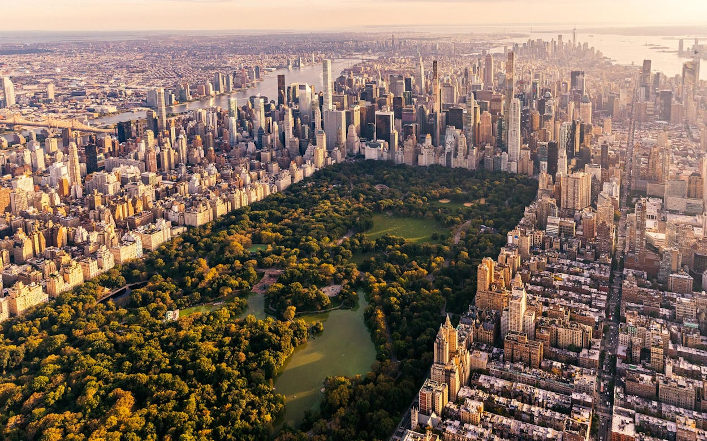

WELCOME TO NEW YORK

New York City by Eve Glasberg
From all the places I’ve visited, New York is by far the best one. From the multitude of cultures to
the towering buildings, I often felt like I belonged there. The streets are always alive, with music,
food, and people from every corner of the world. I loved walking through Central Park in the morning
and watching the city light up at night. Every neighborhood tells a different story, and every moment
feels like a movie scene. It’s a place where you can lose yourself and find yourself at the same time.
New York isn’t just a city it’s an experience.
ICONIC PLACES
New York is home to some of the world’s most iconic places. From the bright lights of Times Square to the
peaceful paths of Central Park, every spot tells a story. The Statue of Liberty stands tall as a symbol
of freedom, while the Empire State Building offers breathtaking views of the city. It’s a place where
history and modern life blend perfectly.
Walking across the Brooklyn Bridge at sunset feels like stepping into a painting. The museums, like The
Met and MoMA, hold treasures from around the globe. Grand Central Terminal isn’t just a station; it’s a
masterpiece of architecture. You can grab a slice of New York-style pizza on nearly every block.
Broadway’s theaters light up the night with unforgettable shows. Everywhere you turn, New York leaves you
with something to remember.
Picture Source: Brooklyn Bridge by Rachel La Pointe
My Favorites New York Restaurants
- CARMINE'S: A famous family-style Italian restaurant known for its giant portions of
classic pasta, chicken parm, and hearty comfort food. Perfect for sharing with a big group before a
Broadway show.
- GRAMERCY TAVERN: One of New York’s finest American restaurants, offering seasonal dishes made with
fresh, local ingredients. The warm, rustic atmosphere and creative menu make it a favorite for special
occasions.
- LE COUCOU: An elegant French restaurant with a luxurious, old-world charm. Known for its refined takes
on classic French cuisine, it’s the kind of place you go for unforgettable fine dining and flawless
service.
- CRIF DOGS: A cool, laid-back spot famous for its gourmet hot dogs with wild toppings. Hidden behind a
phone booth inside is the speakeasy bar Please Don’t Tell (PDT); one of NYC’s best secret
experiences.
TIMES SQUARE
Why Times Square?
Times Square, often called "The Crossroads of the World," is a bustling commercial intersection and
entertainment hub in Midtown Manhattan, New York City. Renowned for its dazzling array of billboards and
neon signs, it's a spectacle of light and a major global tourist destination, attracting millions annually.
Originally known as Longacre Square, it was renamed in 1904 after The New York Times moved its
headquarters there.
The area is the heart of the Broadway Theater District, offering world-class theatrical productions. Times
Square is also famous for its iconic New Year's Eve ball drop, a tradition dating back to 1907 that draws
massive crowds and is broadcast worldwide. Beyond its bright lights and performances, visitors can explore
attractions like Madame Tussauds, various shops, and a vibrant street atmosphere with performers.
Its energetic, non-stop character truly embodies the spirit of New York City.
Picture Source: Crossroads of the World by Harry He
CENTRAL PARK

Central Park, an 843-acre masterpiece of landscape architecture, serves as Manhattan's verdant heart,
offering a vital escape from the urban grind. Conceived in the mid-19th century, it was designed by
Frederick Law Olmsted and Calvert Vaux, transforming a rocky, swampy landscape into the picturesque
haven it is today, though its creation controversially displaced communities like Seneca Village.
This entirely man-made park features a diverse array of attractions, including the tranquil Bethesda Terrace
and Fountain, the enchanting Conservatory Garden, and the historical Belvedere Castle. Visitors can enjoy
activities like boating on the Lake, ice skating at Wollman Rink, exploring the various woodlands and
meadows, or paying tribute at Strawberry Fields, the John Lennon memorial. With 58 miles of pedestrian
routes, it's a popular spot for runners, cyclists, and leisurely strolls, and a significant habitat for
over 200 bird species. Central Park remains one of the most visited urban parks globally, a testament to
its enduring design and role as a cultural and recreational hub.
Picture Source: Central Park by Getty
STATUE OF LIBERTY

The Statue of Liberty, officially "Liberty Enlightening the World," stands majestically on Liberty Island
in New York Harbor, a universal symbol of freedom and democracy. A gift from the people of France to the
United States, it was dedicated on October 28, 1886. Designed by French sculptor Frédéric Auguste Bartholdi
, with an internal iron framework by Gustave Eiffel, the colossal copper statue portrays Libertas, the
Roman goddess of liberty, holding a torch high and a tablet inscribed with the date of American
Independence.
Initially intended to commemorate the centennial of American independence and the friendship between
France and the U.S., it also celebrated the abolition of slavery. Over time, particularly with the influx
of immigrants through nearby Ellis Island, it became a powerful beacon of hope and opportunity, famously
embodied by Emma Lazarus's poem "The New Colossus." Its iconic presence and enduring message make it one
of the most recognizable landmarks globally.
Five Reason to Visit The Statue of Liberty
- A Universal Symbol of Freedom and Democracy: The Statue of Liberty is arguably the
most recognizable symbol of freedom and democracy worldwide. Seeing it in person allows you to connect
with this powerful ideal and understand its significance for millions of people, historically and in the
present day.
- Historical and Cultural Significance: It's a testament to the enduring friendship between
France and the United States, gifted to commemorate American independence and the abolition of slavery.
Visiting offers a tangible connection to this shared history and its evolution as a symbol of hope and
opportunity for immigrants arriving in America.
- An Engineering and Artistic Masterpiece: Designed by Frédéric Auguste Bartholdi with an internal
framework by Gustave Eiffel (of Eiffel Tower fame), the statue is an impressive feat of 19th-century
engineering and art. Witnessing its colossal scale and intricate construction up close is truly
awe-inspiring.
- Proximity to Ellis Island: Your visit to Liberty Island often includes a ferry ride
that also stops at Ellis Island, the historic gateway for millions of immigrants. This combined experience
offers a profound understanding of the immigrant journey and the role the Statue of Liberty played in
their arrival.
- Iconic Views of New York Harbor and the Skyline: From Liberty Island, you'll be treated
to breathtaking panoramic views of the Manhattan skyline, including prominent landmarks like the Brooklyn
Bridge and One World Trade Center, as well as the bustling New York Harbor.
Picture Source: Statue Of Liberty by Andrea Diaz